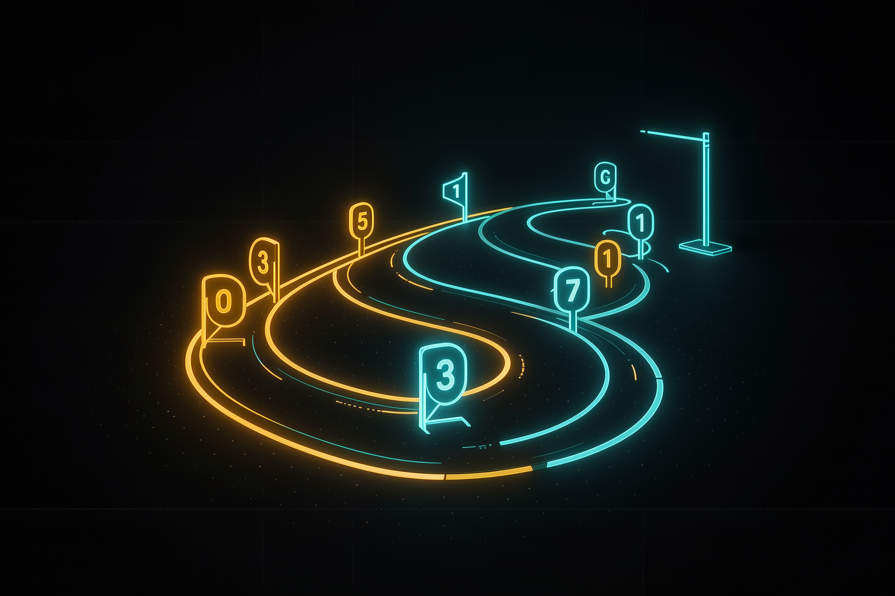

Qué ver: siete hitos en fila. Cada sección de abajo es un hito. No necesitas adivinar nada: solo seguir el camino, de izquierda a derecha, y al final tendrás un loop en marcha.
🎯 Elige una tarea con una respuesta correcta
El primer paso decide el éxito de todos los demás: elige una tarea cuyo que "listo" se pueda comprobar con algo más que tu opinión. Las pruebas pasan, el formato coincide, el script se ejecuta sin errores. Si solo tú puedes decir si quedó bien, el loop no tiene forma de saber que terminó.
✓ Respuesta correcta (buen primer bucle)
- ✓«Haz que pase la prueba que está fallando».
- ✓«Convierte este CSV a JSON con el formato X».
- ✓«Haz que el script se ejecute sin arrojar errores».
✗ Respuesta de opinión (evítala por ahora)
- ✗«Haz que el sitio se vea más bonito».
- ✗«Mejorar la arquitectura».
- ✗«Escribe un texto atractivo».
🧭 El consejo de Anthropic, leído con cuidado
Anthropic recomienda el loop para tareas abiertas, donde no puedes prever los pasos con anticipación. Es cierto, pero en tu primero loop, reduce el alcance a algo que tenga un checker integrado. Libertad durante la ejecución, rigor en la verificación: el agente descubre el camino y una prueba decide si llegó.
📝 Escribe el objetivo en una frase
Ahora concreta la tarea en una frase que describe el estado final. Ejemplo: "Todas las pruebas en /tests pasan al ejecutar npm test." Esa frase se convierte en el estado final — la señal exacta que le dice al loop «puedes detenerte».
✓ Frase con estado final
- ✓"Todas las pruebas en /tests pasan al ejecutar npm test."
- ✓«El endpoint /health responde 200 con curl».
- ✓«El build compila sin warnings».
✗ Frase sin fin
- ✗«Limpia esto».
- ✗«Mejora el código».
- ✗«Resuelve los problemas».
💡 Prueba de la frase
Lee tu frase y pregúntate: "¿Una computadora podría decidir por sí sola si esto ya está hecho?" Si la respuesta es no, tu frase todavía es una opinión disfrazada. Reescríbela hasta que se convierta en algo que un comando pueda verificar.
🔧 Decide las herramientas y qué NO tocar
Define lo que el agente puede y, más importante, lo que él no puede reproducir. En la primera ejecución: permite editar /src e /tests y ejecutar las pruebas; nada de merge, deploy o delete. El worker abre un PR; tú haces el merge.
🧱 Los guardrails son el trabajo de verdad
Hay una frase que vale la pena guardar: "los guardrails son el trabajo de verdad, no los agentes." Cualquiera puede poner un agente en un loop en cinco minutos. Lo que separa un loop seguro de un desastre es el tiempo que dedicas a decidir qué no puede hacerlo. El worker abre un PR, una persona hace merge: ese es el patrón seguro para empezar.
✓ Permitido en la 1.ª ejecución
- ✓Editar /src y /tests
- ✓Ejecutar la suite de pruebas
- ✓Abrir un PR con los cambios
✗ Prohibido en la 1.ª ejecución
- ✗Fusionar por su cuenta
- ✗Hacer deploy / publicar
- ✗Borrar archivos o pruebas
💾 Dale un lugar al estado
Un loop que dura más de una vuelta necesita memoria externa. Pídele al agente que escriba el progreso en PROGRESS.md y hacer un commit en cada cambio relevante. Así, si pierde el hilo, retoma exactamente desde donde se quedó, en vez de empezar desde cero.
🔁 El harness de Anthropic, en 5 pasos
La investigación de Anthropic sobre agentes de larga duración describe un ritmo sencillo que se repite en cada vuelta:
Leer el estado — abre el PROGRESS.md y recuerda dónde se quedó.
Progreso incremental — hace UN cambio que permite avanzar.
Self-verify — revisa su propio trabajo (ejecuta las pruebas).
Commit — registra el cambio con una nota en el PROGRESS.md.
Dejar limpio — cierra el entorno para que la siguiente iteración pueda retomarlo.
🔄 Conecta el ciclo de 4 pasos
Ahora el corazón: el ciclo que se repite en cada vuelta. Reunir contexto → hacer UN cambio → verificar (ejecutar pruebas) → repetir. Un cambio por vuelta no es pereza: es deliberado. "Trabajar en una funcionalidad a la vez" se describió como algo fundamental para que el loop converja.
Lee el diagrama: en cada vuelta, el agente vuelve a leer el estado, hace un único cambio y ejecuta las pruebas. Si pasan, se detiene. Si no, vuelve al inicio: una función a la vez, hasta converger.
💡 Por qué UNA modificación por vuelta
Cuando le pides al agente que arregle todo de una vez, se enreda: cambia diez cosas, dos pruebas fallan por motivos distintos y no sabe qué cambio causó qué. Un cambio por vuelta deja una señal clara: cada prueba que pasa o falla apunta a exactamente una modificación.
🛑 Define una parada obligatoria antes de ejecutar
Antes de presionar play, escribe el freno. Basta una frase: «Detente cuando pasen todas las pruebas o después de 10 intentos, lo que ocurra primero». Esto es el hard stop, y nunca es opcional.
⚠️ Qué sucede sin hard stop
Sin un freno, te esperan dos desastres: "comportamiento emergente extraño" — el loop entra en estados extraños, intentando soluciones cada vez más descabelladas — y la cuenta de tokens, que sigue aumentando mientras da vueltas en falso. Un límite estricto cierra ambas puertas a la vez.
🧩 La regla de oro
Un loop tiene dos condiciones de parada: la buena (se cumplió el objetivo: las pruebas pasan) y la de seguridad (el límite: máximo de intentos). La primera la esperas; la segunda la impones. Nunca confíes en que el modelo se detendrá por sí solo.
👀 Ejecuta, observa, ajusta el prompt
El paso final: mira el primer run en vivo. Y cuando algo salga mal, corrige las instrucciones — no la salida. Editar el resultado a mano es tapar el agujero; editar el prompt es arreglar la fábrica.
🏺 "Clay on the pottery wheel"
Hay una metáfora excelente para esto: el loop es barro en la rueda del alfarero. Cuando falla, no reparas el jarrón roto: ajustas la presión de las manos (el prompt, el guardrail, el criterio) y vuelves a poner la arcilla en el torno. Cada fallo señala un área del prompt que debes ajustar.
Tu primer loop, completo. Junta los 7 pasos en un solo prompt. Pégalo en Claude Code y observa:
# SEU PRIMEIRO LOOP — cole no Claude Code
# 1. Objetivo (a frase / done-state)
Objetivo: fazer todo teste em /tests passar ao rodar `npm test`.
# 2. Ferramentas e limites (permissões + guardrail)
Você pode editar </src> e </tests> e rodar os testes.
NÃO dê merge, deploy ou delete. Não apague testes para fazê-los passar.
Quando terminar, abra um PR com as mudanças — eu dou o merge.
# 3. Estado (PROGRESS.md + commit)
A cada mudança que melhora algo, escreva 1 linha em PROGRESS.md
e dê um commit com uma nota curta.
# 4. O ciclo de 4 passos (uma mudança por volta)
Repita: (1) leia o estado e rode `npm test`, (2) faça UMA correção
no arquivo mais responsável pela 1ª falha, (3) rode `npm test` de novo
para verificar, (4) se ainda falhar, volte ao passo 1.
# 5. Hard stop (max_turns em palavras)
Pare quando todos os testes passarem, ou após 10 tentativas —
o que vier primeiro.Cómo verificar: abre un proyecto pequeño con 1 o 2 pruebas fallidas, pega el prompt y no te apartes. Debes ver al agente ejecutar npm test, leer los fallos, hacer una corrección, volver a ejecutar y anotarlo en PROGRESS.md, repitiendo hasta que pase o llegue a 10 intentos. Si intenta algo fuera de /src y /tests, falló tu guardrail: refuerza la instrucción y vuelve a ejecutarlo.
Tu loop entrega una prueba que pasa, pero la corrección quedó fea. ¿Qué haces?
🧾 Resumen del módulo
Siguiente:
3.2 — Loops para copiar y ejecutar